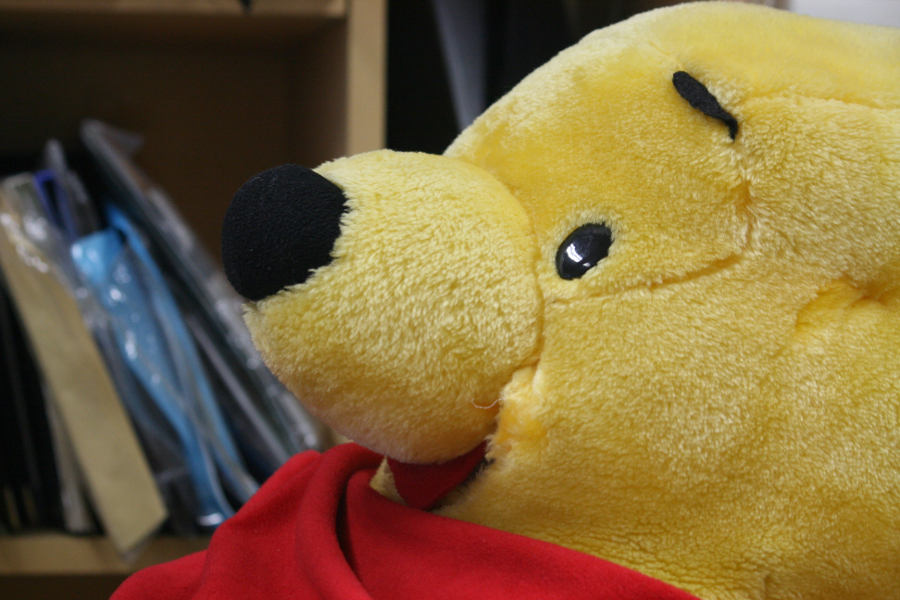
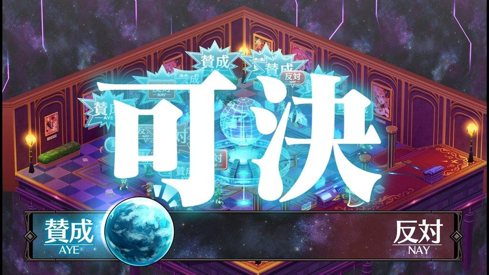
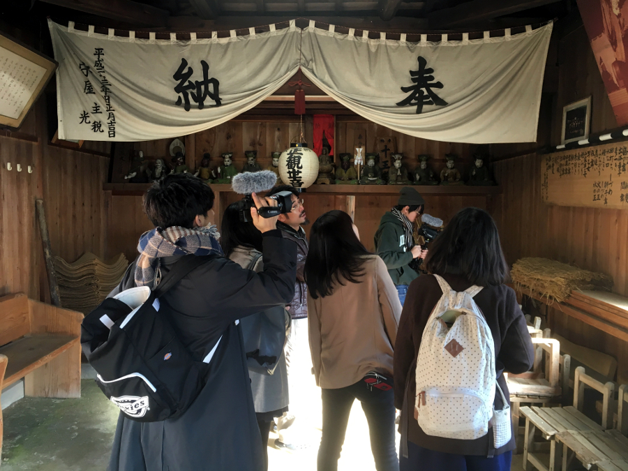
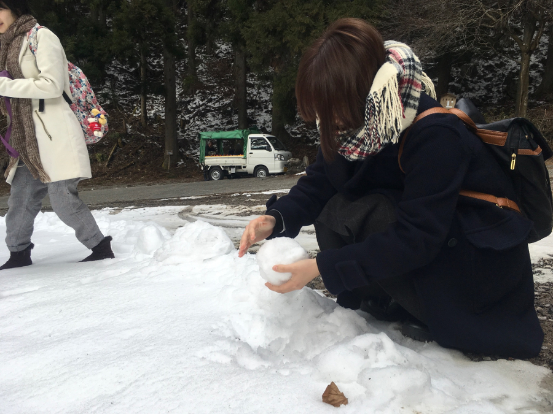
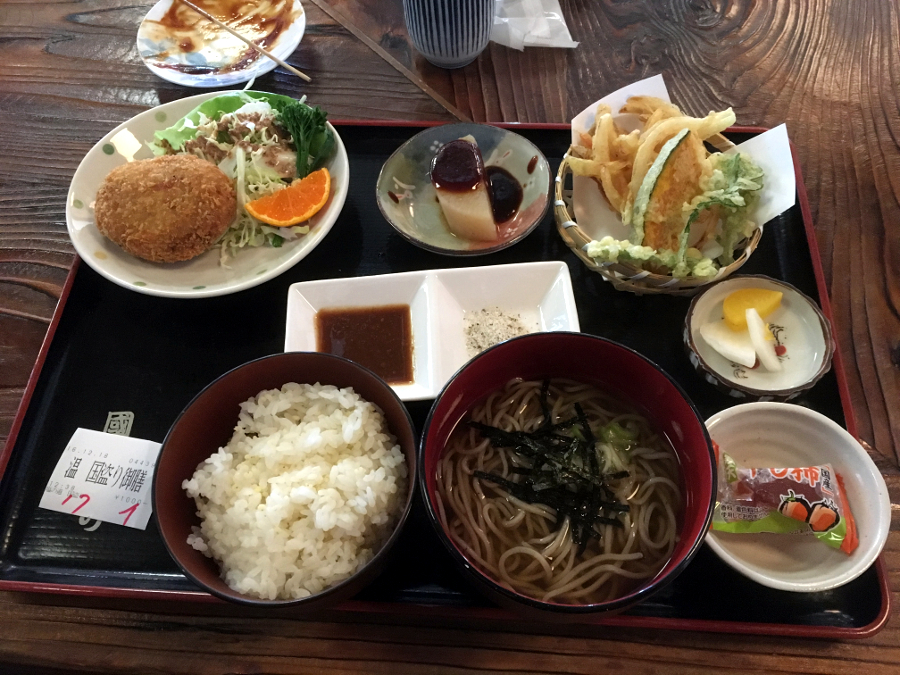
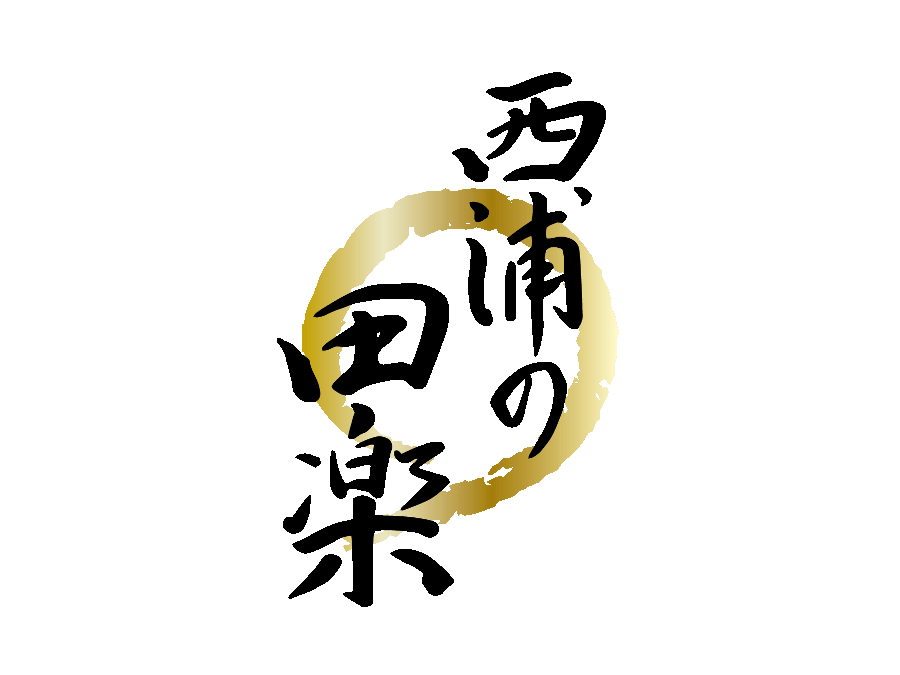
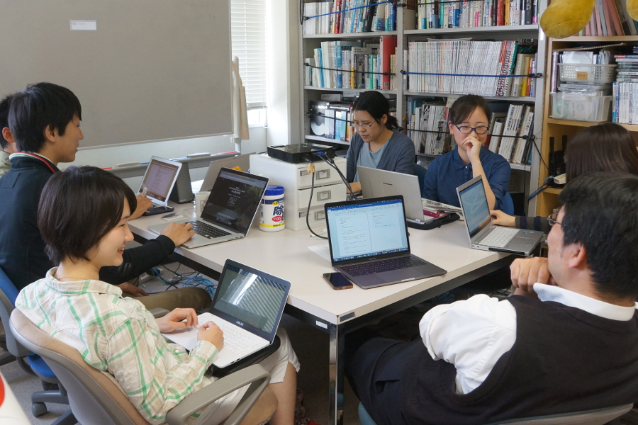
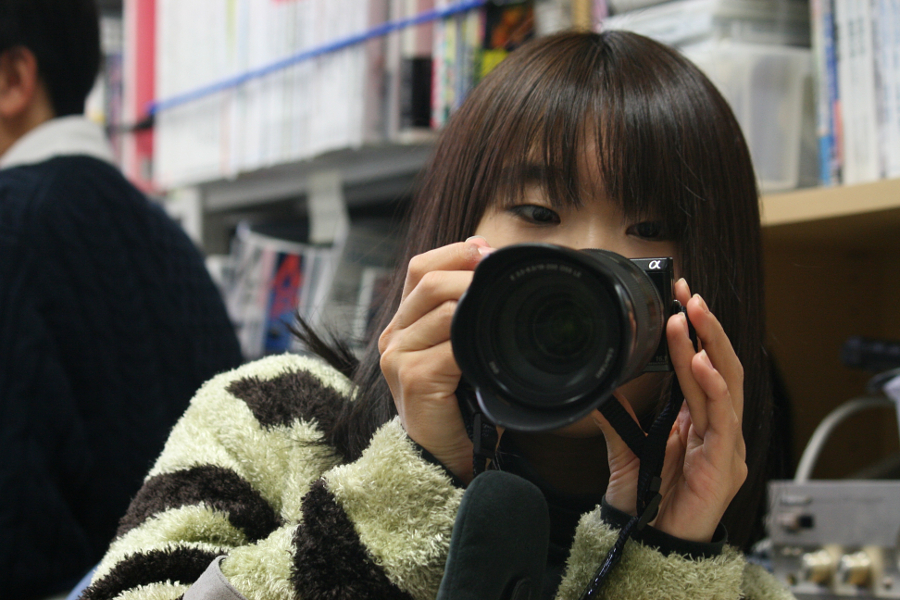
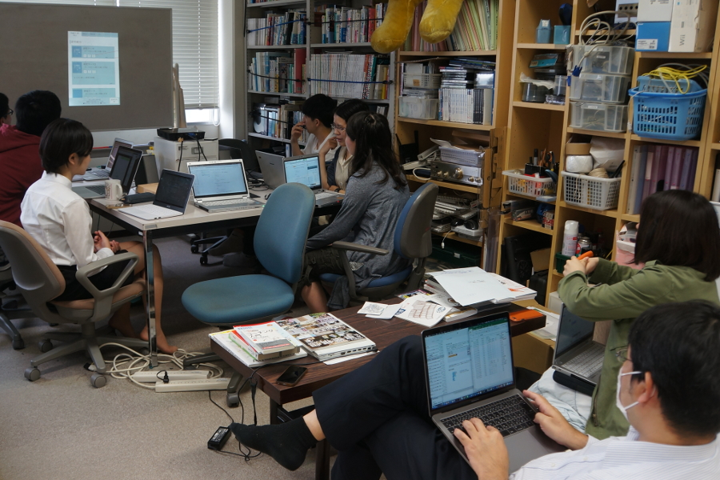

What's ゼミ
杉山研では前期・後期共に１~３つのゼミがあります。毎回、希望者による自主ゼミも追加されています。授業がなければ週の予定は融通が利く！？
杉山研のじかんわり
卒研ゼミ
4年生が対象の必須ゼミで、卒業研究の進め方指導や状況報告などを行います。自分の興味があることや授業の延長のテーマを選択し、自分の力で進める研究活動ですが先生やメンバーからアドバイスを貰い、サポートを受けながら研究に取り組みます。
担当する学生が多いと先生もオーバーフロー気味…？
過去の研究テーマ例
論文ゼミ
定期的に行われる正式名称不明の自主ゼミです。自分が気になるテーマや研究に関する論文を読み、他メンバーに向けてその内容を紹介します。
任意参加なのでひっそりと行われていますが、研究テーマを見つけるきっかけや論文の探し方、構成の勉強をするにはうってつけ。
ID/IS演習
- 
- 
- 
- 
研究室に配属された3年生が初めて取り組む演習です。テーマ、フィールドを決めるところから始めてどんな演習になるのかは毎年のメンバー次第。例年は地域のお祭りをテーマにし、フィールドワークや問題解決のためのメディア制作を行っています。
【過去のID/IS演習の例】
報告会
週に一度、ゼミメンバーが全員出席するゼミです。各界の担当者は自分の研究の状況を報告し、メンバーと意見交換をしてアドバイスをもらえる時間です。
また研究室内の連絡や相談もこの時間に行います。研究室の皆に会える希少な時間です。
カメラゼミ

- 

杉山研に入った3年生が参加する必須ゼミの一つ。カメラの使い方と動画編集の基本を座学や実践を通して勉強します。
ここで学んだ成果は毎年、年末に行われる杉山研OBOG会で見せるネタ動画でお披露目します。
Web更新
皆さんが今見ているこちらのサイト。4年生が中心になって研究室選択に悩む3年生に向けて、杉山研のことを知ってもらうための紹介サイトを作ります。その内容や方針は年度ごとに様々…。
お時間があれば過去のサイトも是非ご覧ください。
【過去の杉山研のサイト】
輪講
全員参加のゼミの一つ。各自がお勧めする本の中から前期・後期に1～2冊の本を選び、ページを分担して読み込み互いに内容を発表しあうことで1冊の内容を皆で勉強しています。
技術の専門書やビジネステキストなどテーマは様々。3年生が入った後は英語の本でも輪講を行います。
おひるどき
すぎやま研のランチタイム。皆大好き「うおたか」へメンバーがおつかいに行ったり、先生とお外にランチに行くことも！？
お湯、レンジも完備しているので温かいお昼ご飯、食べられます。